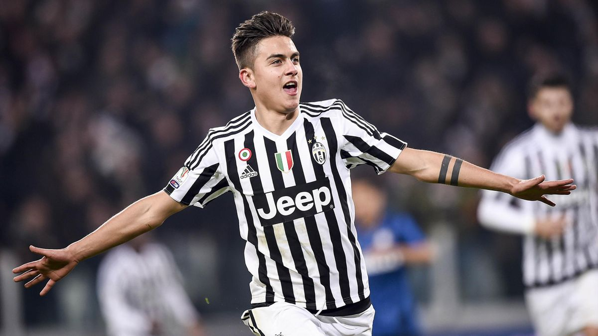
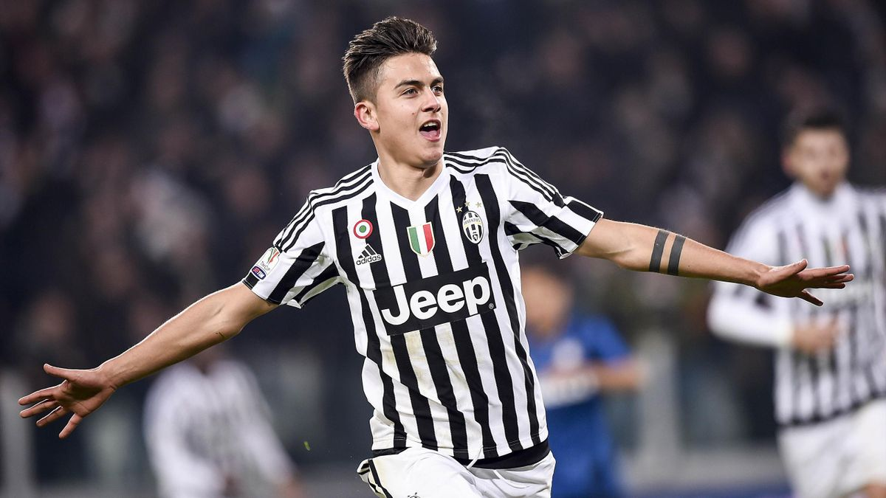

Dybala: Una storia d'amore
 

Gli anni 2015-2017: Dybala alla Juventus e nella nazionale argentina Con i bianconeri firma un contratto di cinque anni ed esordisce in Supercoppa Italiana, contribuendo con un gol al successo contro la Lazio. A settembre esordisce in una competizione europea, nel match vinto contro il Manchester City in Champions League. Segna la sua prima rete in Champions League nel febbraio del 2016 contro il Bayern Monaco, anche se i tedeschi eliminano la Juve. Nel frattempo, nell'ottobre del 2015 Dybala ha esordito anche con la maglia della Nazionale argentina (in passato era stato convocato anche dall'Under 17 e dall'Under 20 albiceleste, ma non era mai sceso in campo): accade nella partita valida per le qualificazioni ai Mondiali del 2018 giocata contro il Paraguay, che finisce sullo zero a zero. La sua stagione si conclude con una doppia vittoria: il primo scudetto e la prima Coppa Italia della sua carriera, con la Juventus di Massimiliano Allegri. Avere un figlio calciatore era il sogno di mio padre. Tutti i ragazzi dovrebbero tentare di inseguire il proprio sogno, non solo nello sport. Vengo da un paese piccolo, nel quale grandi squadre come la Juventus sembrano irraggiungibili. Invece papà ci ha creduto. E io ce l'ho fatta. Nella stagione 2016/17, Dybala si fa notare con la maglia dell'Argentina per un'espulsione rimediata a settembre contro l'Uruguay ed è protagonista in negativo della finale di Supercoppa Italiana contro il Milan, sbagliando il rigore decisivo, ma si riscatta con un campionato ottimo. In Champions League, invece, si mette in evidenza per la doppietta grazie alla quale la Juventus stende per tre a zero il Barcellona nella gara di andata dei quarti di finale. Nel 2018 inizia una relazione sentimentale con Oriana Sabatini, modella, cantante e attrice sua connazionale.